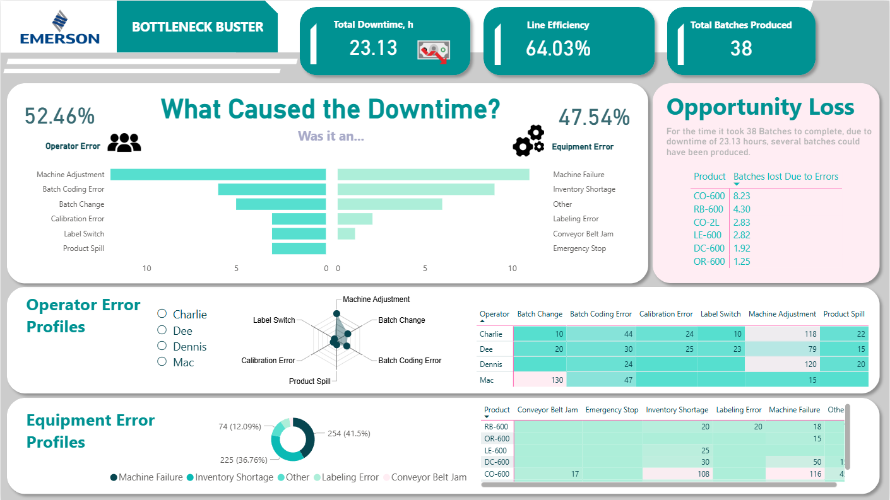

Monitors production efficiency, downtime, and output metrics to
optimize manufacturing performance.
Overview
This operations analytics dashboard analyzes manufacturing downtime across production lines, diagnosing whether losses stem from operator behavior or equipment failure — and quantifying exactly how many batches were lost as a result. Built for the company's production environment, it converts raw downtime data into a structured root-cause framework that operations managers can act on immediately. The dashboard eliminates guesswork from the shop floor by making every hour of lost production traceable, attributable, and measurable.

Business Question
Manufacturing teams routinely face a critical diagnostic question after production losses: was it a people problem or a machine problem? Without a structured breakdown, floor managers and operations leads cannot effectively target corrective action — whether that means retraining specific operators, repairing recurring equipment failures, or redesigning batch processes. At 64.03% line efficiency with 23.13 hours of total downtime across 38 batches, the cost of unresolved bottlenecks is both quantifiable and preventable. This dashboard was built to close that accountability gap.
Key Insights & Features
-

- Core KPIs Tracked
-
Total Downtime (23.13 hours), Line Efficiency (64.03%), and Total Batches Produced (38) — providing an instant operational health score at the top of the dashboard for rapid situational awareness.
- Downtime Root-Cause Split
-
A mirrored butterfly bar chart attributes downtime to Operator Error (52.46%) vs. Equipment Error (47.54%), breaking each down by specific cause — Machine Adjustment, Batch Coding Error, Machine Failure, Inventory Shortage, Conveyor Belt Jam, and more.
- Opportunity Loss Quantification
-
A dedicated panel calculates batches lost per product due to downtime errors — CO-600 leading with 8.23 lost batches — translating operational inefficiency directly into missed production output and revenue impact.
- Operator Error Profiles
-
An individual-level radar chart and error frequency matrix profile each operator (Charlie, Dee, Dennis, Mac) across six error types, enabling targeted coaching conversations grounded in data rather than observation alone.
- Equipment Error Profiles
-
A donut chart segments equipment failures by type — Machine Failure (41.5%), Inventory Shortage (36.76%), and Other (12.09%) — with a product-level breakdown table revealing which SKUs are most affected by each failure mode.
- Analytical Approach
-
Primarily diagnostic — the dashboard is purpose-built to answer why efficiency is low, who or what is responsible, and how much it cost in lost output — supporting root-cause analysis and continuous improvement (CI) workflows.
| Tool | Usage |
|---|---|
| Power BI | Dashboard design, report pages, interactivity |
| DAX | KPI calculations, YoY/MoM comparisons, margin metrics |
| Power Query (M) | Data transformation and modeling |
| Excel | Source data preparation |
| Data Modeling | Star schema with fact and dimension tables |
Impact & Value
By transforming production log data into a structured accountability framework, this dashboard gives operations managers the diagnostic clarity needed to take targeted corrective action — whether that's retraining a specific operator on machine adjustment protocols or escalating a recurring conveyor belt jam for preventive maintenance. The Opportunity Loss panel makes the business case for intervention concrete and quantifiable, directly connecting downtime causes to lost batch output. For any manufacturing or operations role, this project demonstrates the ability to move beyond descriptive reporting and deliver diagnostic analytics that drive measurable efficiency improvements on the production floor.
Let's Work Together!
I help businesses turn raw data into actionable insights, dashboards, and data-driven strategies.
- Data Analysis & Visualization
- Power BI & Dashboard Development
- Business Intelligence Solutions
Phone
+63 956-175-9646Address
Bacolod City, Negros OccidentalPhilippines